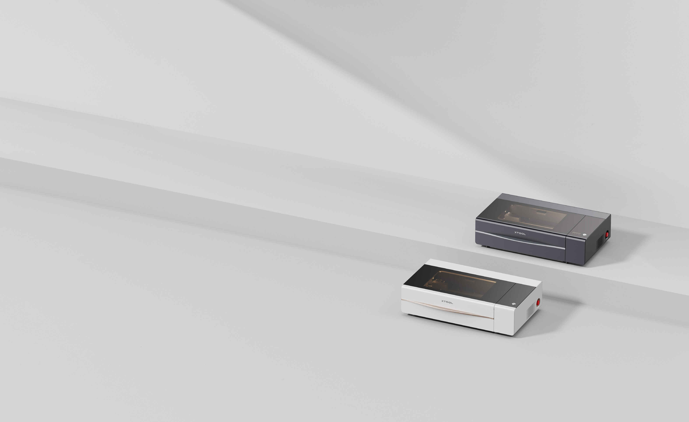

صور xTool P2S والرسوم
صور حقيقية للطابعة إلى جانب رسم توضيحي داخلي، مع بيان المصدر وطبيعة كل صورة وحدود إعادة استخدامها.
صور فعلية للطابعة
صور فوتوغرافية لوحدة xTool P2S منشورة ضمن مراجعة Gadgeteer؛ الصور توثّق الوحدة في تجربة المراجع وليست صورًا لوحدتنا.


حقوق الصور الفوتوغرافية محفوظة لناشرها. لا تظهر في نسخة Git المنشورة؛ تبقى هذه النسخ ضمن ملفات جهازك المحلية. عند غيابها، استخدم روابط المصدر الأصلي.
صورة المنتج الرسمية

من حزمة التصميم إلى سطح الخامة
*العناصر الداخلية ممثلة بصورة مفاهيمية لا تُظهر تفاصيل بصرية دقيقة أو ترتيب المرايا.
تحليل داخلي رسم أصلي بصيغة SVG أُنشئ لهذه البوابة. مرجعية عامة للغطاء ومجرى العادم من دليل المستخدم الرسمي xTool P2S.
كيف تقرأ دقة الرسم
- تخطيط الحجرة والرأس والعادم مبسط، ولا يمثل القياسات الفعلية أو منظورًا تفصيليًا.
- الرسوم لا تُستخدم لتحديد موضع الصيانة، ضبط المرايا أو فك الأغطية.
- الصور الفوتوغرافية محفوظة في نسخة العمل المحلية لأغراض التوثيق، ولا تُضمّن في Git لعدم العثور على ترخيص إعادة نشر صريح. اضغط رابط المصدر لفتح صفحة المراجعة الأصلية.